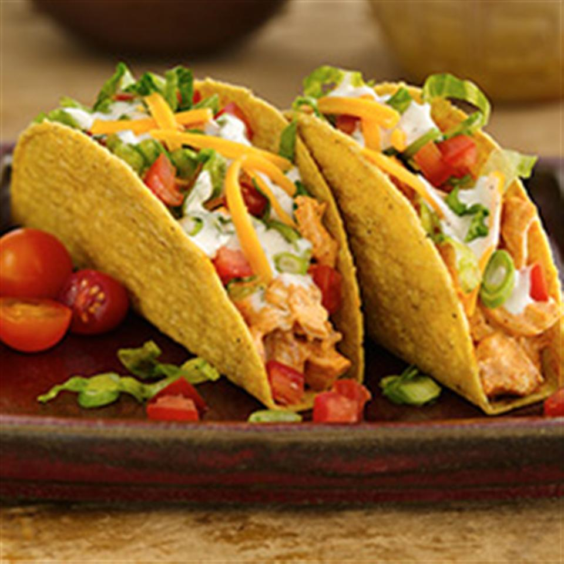

Chicken Ranch Tacos

Description
Ingredients
- 1 (4.7 ounce) box Old El Paso® Stand 'N Stuff® taco shells
- 3 cups cut-up deli rotisserie chicken
- 1 (1 ounce) package Old El Paso® taco seasoning mix
- ½ cup ranch dressing
- 1 ½ cups shredded lettuce
- 1 medium tomato, chopped
- 1 cup shredded Cheddar cheese
- ¼ cup sliced green onions (Optional)
- 1 tablespoon Old El Paso® Thick 'n Chunky Salsa
- 1 teaspoon Additional ranch dressing
Steps
-
Heat oven to 325 degrees F. Heat taco shells in oven as directed on box.
-
Meanwhile, in medium microwaveable bowl, place chicken. Sprinkle with taco
seasoning mix; toss gently to coat. Microwave uncovered on High 2 to 3 minutes
or until hot. Stir in 1/2 cup dressing.
-
Spoon warm chicken mixture into heated taco shells. Top with lettuce, tomato,
cheese and onions. Drizzle with salsa and additional dressing.